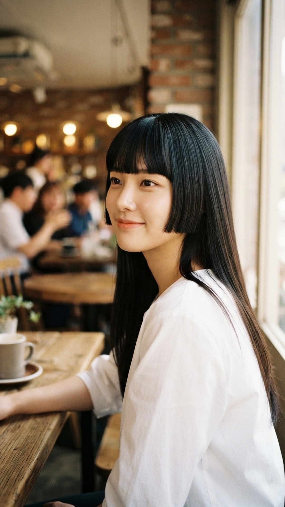

BEAUTY letter
Hair Letter·HIME CUT
요즘 파리에서
따라 하는 한국 머리
옆머리만 뚝 잘라도 분위기가 달라져요.
주문법부터 손질까지 담았어요.
이게 요즘 파리에서
난리 난 히메 커트
일자 앞머리
볼~턱 옆머리
긴 뒷머리
아 그전에 먼저!히메 커트가
뭐냐면
- ①눈썹 근처 일자 앞머리
- ②볼~턱에서 뚝 끊은 옆머리
- ③나머지는 긴 머리 그대로
일본 전통 '공주 머리'에서
유래했어요
근데 왜 갑자기
파리에서 유행일까?
프랑스 '보그'가K-팝 가수들의 대표 헤어로 소개했어요
헝클어진 파리지앵 헤어 다음은
반듯한 히메 커트래요
옆머리가 얼굴 여백을 가려서
이목구비가 또렷해 보이거든요
*출처: 보그 코리아 (2026.09.17)
나한테도
어울릴까?
- ✓달걀형 · 긴 얼굴옆머리가 길이를 잡아 줘요
- ✓생머리 · 살짝 곱슬단면이 깔끔하게 살아요
둥근 얼굴 · 각진 턱이라면?옆머리를 턱선보다 살짝 길게!
*출처: 보그 코리아 (2026.09.17)
미용실에선
이렇게 말하세요
"앞머리는 눈썹 살짝 아래
일자로 잘라 주세요"
"옆머리는 광대~턱 사이에서
일자로 끊어 주세요"
"뒷머리 길이는 그대로요"
몇 mm 차이로 균형이 달라져요
셀프 컷은 금지!
아침 손질은
5분이면 끝
- ①둥근 빗으로 빗어 내리며 드라이
- ②바쁠 땐 판 고데기로 옆머리만
- ③끝에 헤어 오일 살짝
자르고 나면
좋은 점 하나 더
하나로 묶으면
짧은 옆머리만 남아서 단발처럼 보여요
풀면다시 긴 생머리!
머리 하나로 스타일 두 개
에디터의 한 줄 팁히메 커트는
어두운 컬러가 예뻐요
단면이 선명해야 반듯해 보이거든요
마침 올가을은 흑발이 대세래요
*컬러칩은 예시 · 출처: 얼루어 코리아 (2026.10.15)
미용실 갈 때
이 영상 보여 주세요
저장해 두면 주문할 때 편해요
@from.beautyletter 팔로우